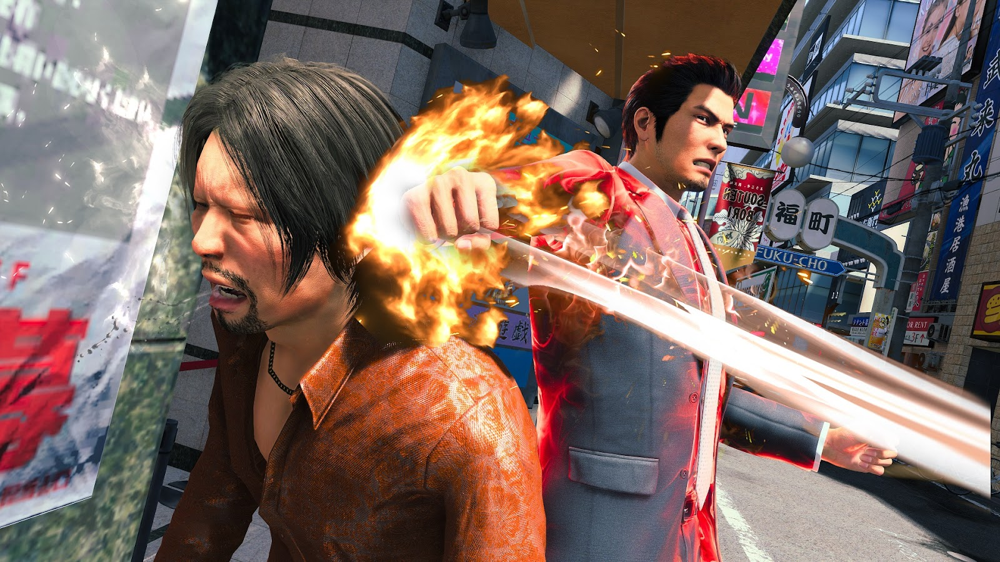
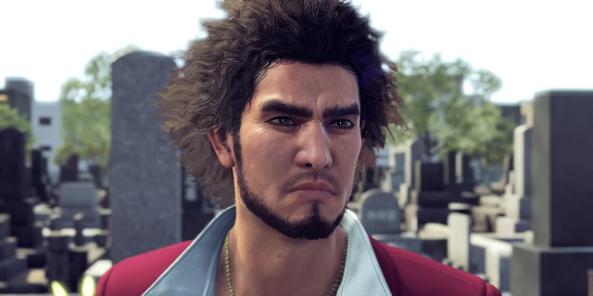

7 things we learned from 15 minutes of Yakuza: Like a Dragon
gameplay
Yakuza: Like a Dragon came out in Japan in January, but we're still
waiting for it—impatiently—to make it over to the West in English.
I'm not sure if this gameplay video from IGN's Summer Gaming Expo
makes it easier or harder...
Read More

RGG Studios Share Their Thoughts On Developing The Upcoming “Like A
Dragon” Titles
The Yakuza series is a popular JRPG series developed by and
published by Sega and RGG Studios. First launched in 2005, it has
now garnered a loyal following. Known for its over-the-top battles,
the series is also widely popular thanks to the numerous references
and memes over the years...
Read More

RGG Studio debut a docuseries delving into Like A Dragon 8's
development
Documentaries chronicling game development are great. With so much
marketing fluff surrounding games, it can be nice to hear directly
from the devs about their inspirations, struggles, and creative
intentions. Hearing them chat candidly, making jokes and getting
excited, is a good reminder that real-life people are at the heart
of every game...
Read More

Like A Dragon 8 Is About "The Yakuza World And Its Necessary Evils"
Says RGG Studio Head
With the next installment in the series, Ryu ga Gotoku Studio will
officially do away with the Yakuza name. The studio recently
announced three new games, each of which distinctly lack the iconic
'Yakuza' name, instead using a translation of the traditional
Japanese name of the series – Like a Dragon. According to producer
Masayoshi Yokoyama, the studio did so...
Read More